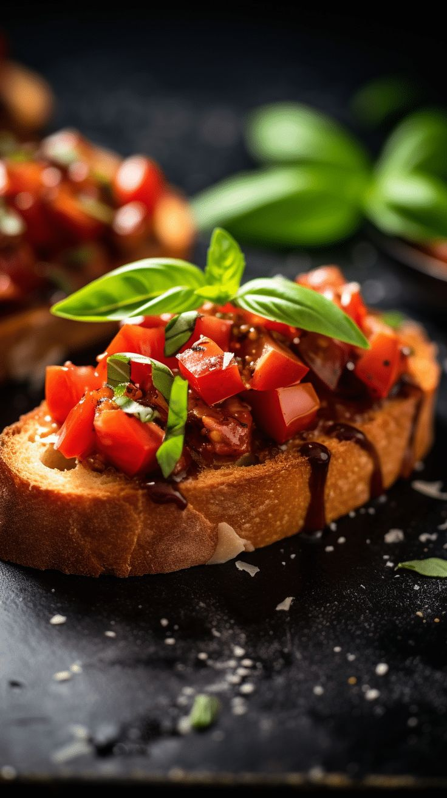

Bruschetta z pomidorami i bazyli
Klasyczna woska przystawka na chrupicym chlebie z dodatkiem wie偶ych pomidor贸w i bazylii.

Skadniki (na 4 porcje):
- 1 bagietka lub ciabatta
- 4-5 wie偶ych pomidor贸w
- 1-2 zbki czosnku
- wie偶a bazylia
- 2-3 y偶ki oliwy z oliwek extra virgin
- S贸l i pieprz do smaku
- Ocet balsamiczny (opcjonalnie)
- Parmezan (opcjonalnie)
Spos贸b przygotowania:
- Bagietk pokr贸j na kromki i posmaruj oliw. Zgrilluj na zocisty kolor.
- Pomidory pokr贸j w drobn kostk i wymieszaj z oliw, sol, pieprzem i posiekan bazyli.
- Przestudzone kromki natrzyj przekrojonym zbkiem czosnku.
- Na ka偶d kromk chleba na贸偶 mieszank pomidor贸w.
- Skrop octem balsamicznym i opcjonalnie posyp parmezanem.
- Podawaj od razu po przygotowaniu.